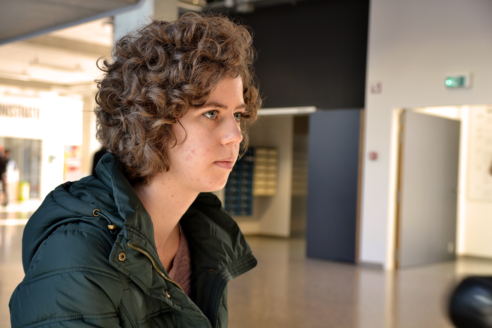

Ymke Vandebroek

I'm Ymke Vandebroek, a 19-year old student and I'm studying Graphic and Digital Media at the Artesis Plantijn University Antwerp, Belgium. I’m in my second year of my bachelor degree, specialised in online media. All of the content has been made by myself for school projects, but photography is a hobby of mine. I welcome you to my self-coded portfolio site!